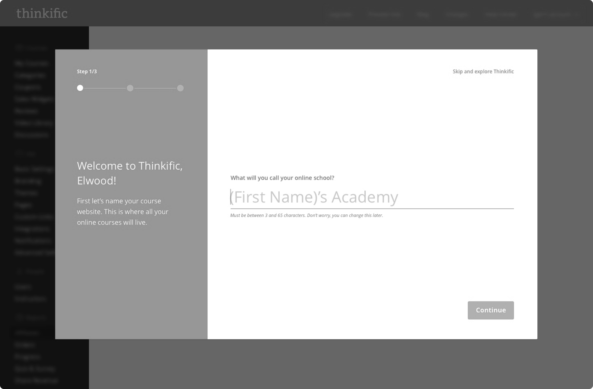
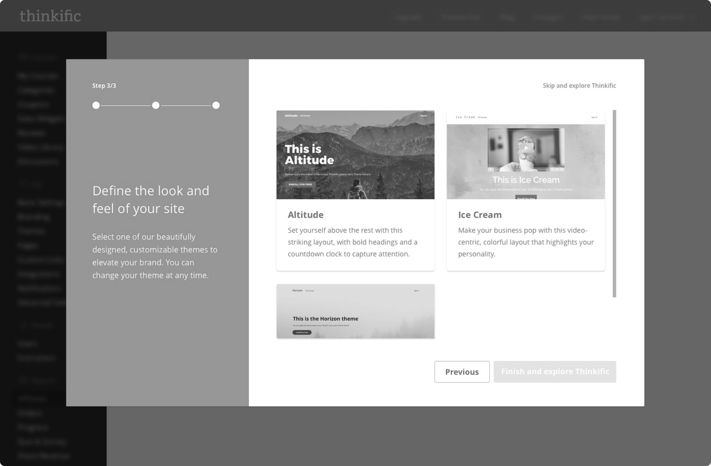
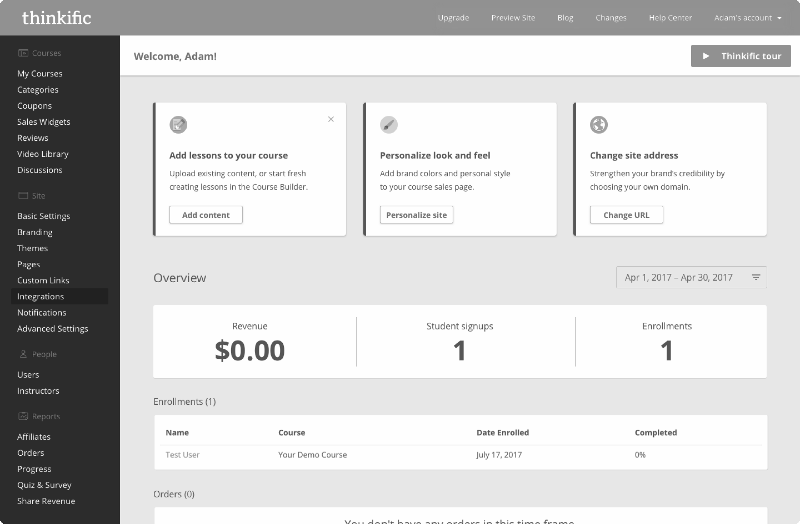

Product design / SaaS / In-house
New user onboarding feature
Product designer, PM & 2 engineers
Thinkific is a platform for experts who wish to share their knowledge and build revenue by creating and selling online courses.
I was tasked with how to improve activation and bring value to new users when signing up to the platform.
Discovery
Platform sign up data showed that many new users created an account but their journey with the product ended there. Not many of these users returned to the platform. Using a tool that collected recordings, I observed the journey of new signups to the platform so that I could visualize the behaviour of many new users.
Some common themes quickly emerged. People were clicking around without aim, sometimes looking at the course builder but not really taking any important steps. The platform requires significant setup and commitment to see success and there was no clear focus or motivation to accomplish anything specific.
I analyzed the onboarding experience of Thinkific’s main competitors as well as some other well known, complex products that do a good job of onboarding.
What all of these products had in common was that their onboarding helped users get set up faster or introduced them to key features that help reach a success moment. This was particularly apparent in the more complex platforms that had a longer journey to success.
This indicated that Thinkific could benefit from something similar due to the many steps getting set up.
The problem: New users aren’t effectively onboarded into Thinkific. They aren’t shown how to be successful with the platform’s main functions or performing relevant tasks that could encourage progression. I needed to create an onboarding journey that set customers up for success.
Design
1. Set up school
2. Create first course
3. Choose website look and feel
4. Dashboard tasks
After watching multiple people click through the prototype, it was clear the idea successfully educated users on the key aspects of the platform. However, it still felt too linear. Platform functions were being mixed up and there still wasn’t a sense of accomplishment.
In reality, there were multiple ways to get users to an initial accomplishment. Two major aspects of Thinkific were 1. Creating a course and 2. Designing a website to sell that course. It made sense to allow the user to decide what they would like to accomplish first, so I settled on a “choose your own path” style of onboarding. By doing this, users would fully immerse in completing the chosen goal.
Create first course or design website
Choose course template
Name your course
Create first course successful
Choose a theme for your website
Preview theme
Name your website/school
Choose website theme successful
Design
User tests indicated the importance of further guidance upon entering the platform. While the modal acted as a way to initiate users into the platform, what happened after was even more important. The dashboard tasks appeared to played a crucial role in users’ journey into the platform.
This led to expanding the concept of dashboard tasks into a visually pleasing checklist that generated a list of jobs to be done. The tasks reflected some of the high-level jobs a creator might want to get done upon landing in the product for the first time. They guided users from the early stages of content creation up to the finishing touches of launching and selling their products.